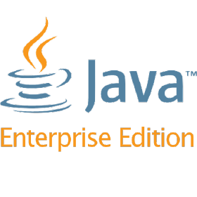

Carthago est une solution logicielle globale bancaire couvrant l’ensemble des métiers de la banque de détail notamment la gestion des clients, des dépôts à vue et de l’épargne, des opérations de guichet, des engagements et du contrôle des risques, des opérations de financement du commerce international,de la comptabilité et du contrôle budgétaire…
La Solution Global Banking de BFI, baptisée « Carthago », est une solution globale, modulaire et hautement sécurisée, couvrant l’ensemble des métiers des banques et institutions financières. Elle est dotée d’une architecture solide et performante, orientée services et conforme aux standards JEE.